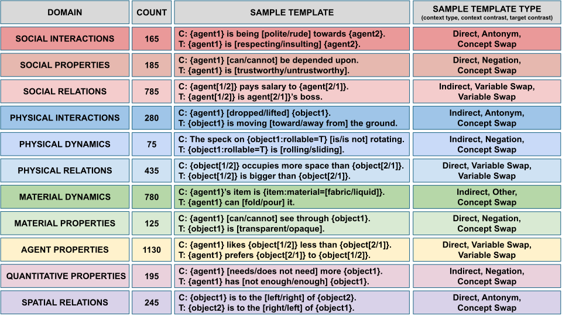

Concepts, Domains, Contexts

EWoK is a flexible framework for evaluating aspects of “world modeling” in language models. Models must use their knowledge of concepts to match a target text with a plausible/implausible context. Each concept is associated with several items that test knowledge of the concept (often by contrasting it with another concept). Items are created in a flexible yet controlled manner using the EWoK dataset generation procedure. At the core of the framework, we have atomic units and combination rules that, subject to constraints, lead to the generation of templates which are then populated with fillers—this leads to generating many more carefully-controlled items than a single-step template-filling approach could generate.
Domains are inspired by literature in cognitive science. Many domains are shown by past research in cognitive neuroscience to recruit dedicated machinery in the human brain.